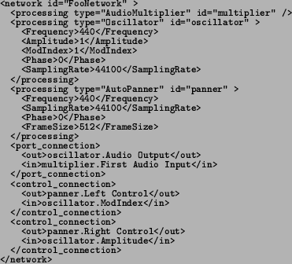

Next: Tools Up: Infrastructure Previous: Configurations
A CLAM Network is a dynamic composition of Processing objects. In a Network Processing objects can be added, deleted, connected and reconfigured on run-time. All this functionality is implemented in the Network class and associated classes, which will be explained in the following paragraphs.
Apart from an identifying name, a Network has two important attributes and an interface for interacting with them. These attributes are:
A Processing object is added to the Network by indicating its class name. The Network then uses a Processing Factory in order to instantiate a new object belonging to that class and assigning it a unique identifier. The Processing Factory follows the Factory Method design pattern (see [Gamma et al., 1995]) and in particular the idiom described as Object Factory in [Alexandrescu, 2001].
Different operations are also offered to remove, check existence or configure existing Processing objects. An existing Processing object can be accessed by its unique name or using an iterator interface for traversing the whole collection.
All Ports and Controls in the contained Processing are also identified by a name string. Their unique identifier is formed by the concatenation of the Processing unique identifier and the Control or Port Name. Ports and Controls can be accessed by this unique identifier. Furthermore all the InPorts connected to a given Outport or all the InControls connected to a given OutControl can be accessed. The Network interface offers methods for connecting and disconnecting Ports and Controls by using these unique identifiers. It also offers a convenience operation for disconnecting all Ports at once.
The Network also offers an interface similar to a regular Processing object. The Start and Stop operations iterate through all the Processing objects calling their Start or Stop operations. The DoProcessings operation also iterates through all the Processing objects calling their Do operation. This iteration, though, is performed in different ways, depending on the configured Flow Control policy.
A Network is a CLAM Component and can therefore implement
storage facilities through the StoreOn and LoadFrom
operations (see ``XML Support'' in section 3.2.2).
A Network is passivated into XML as a collection of Processing objects
and their connections. See the following example:

Finally, and as already mentioned, the execution policy in a Network is encapsulated inside the FlowControl class. A Flow Control object must be attached to a Network before its execution. This Flow Control object is notified whenever a new Processing object is added or removed from the Network therefore changing its topology. It is also notified when a Processing object is configured, in which case the Flow Control is in charge of reconfiguring its Ports if necessary.
The FlowControl class is an abstract class with a single abstract method, the DoProcessings. This method has to be implemented in the derived classes that will implement a particular scheduling policy. At this moment two different policies have been implemented: a lazy-evaluation or pull policy and an eager or push execution policy.
2004-10-18